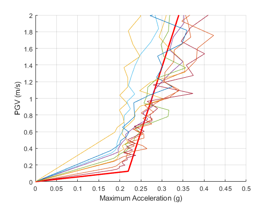

verification Incremental dynamic analysis for multiple motions
Contents
Reference
Deng, P., Pei, S., van de Lindt, J. W., Liu, H., & Zhang, C. (2017). An approach to quantify the influence of ground motion uncertainty on elastoplastic system acceleration in incremental dynamic analysis. Advances in Structural Engineering, 20(11), 1744-1756.
Description
Figure 4(a) of the above reference contains the IDA curves of an elastoplastic SDOF system under the Consortium of Universities for Research in Earthquake Engineering (CUREE) GM suite (Krawinkler et al., 2001), which were constructed using the maximum acceleration. In this example, an arbitrary suite of strong ground motions is selected and the maximum acceleration IDA curves are constructed similar to Figure 4(a) of the above reference. The IDA curves of this example strongly resemble those of that figure.
Earthquake motions
Load data from a suite of earthquakes
GM={'Cape Mendocino.dat';
'ChiChi.dat';
'Christchurch2011HVPS_UP.dat';
'Imperial Valley.dat';
'Imperial_Valley_El_Centro_9_EW.dat';
'Kobe.dat';
'Kocaeli.dat';
'San Fernando.dat';
'Spitak.dat'};
n=size(GM,1);
dt=cell(n,1);
xgtt=cell(n,1);
for i=1:n
fid=fopen(GM{i},'r');
text=textscan(fid,'%f %f');
fclose(fid);
t=text{1,1};
dt{i}=t(2)-t(1);
xgtt{i}=text{1,2};
end
Setup parameters for IDA analysis
Switch
sw='ida';
Eigenperiod
T=1;
Scaling factors
lambdaF=logspace(log10(0.001),log10(10),100);
Type of IDA analysis
IM_DM='pgv_acc';
Mass
m=1;
Yield displacement
uy = 0.18*9.81/(2*pi/T)^2;
Post yield stiffness factor
pysf=0.01;
Fraction of critical viscous damping
ksi=0.05;
Algorithm to be used for the time integration
AlgID='U0-V0-Opt';
Set initial displacement
u0=0;
Set initial velocity
ut0=0;
Minimum absolute value of the eigenvalues of the amplification matrix
rinf=1;
Maximum tolerance for convergence
maxtol=0.01;
Maximum number of iterations per increment
jmax=200;
Infinitesimal variation of acceleration
dak=eps;
Construct and plot the IDA curves in a loop
Initialize figure
figure() hold on % Plot the red bold curve of Figure 4(a) of the above reference plot([0,0.22,0.34],[0,0.125,2],'r','LineWidth',2) for i=1:n % Apply OpenSeismoMatlab to calculate the ith IDA curve S1=OpenSeismoMatlab(dt{i},xgtt{i},sw,T,lambdaF,IM_DM,m,uy,pysf,ksi,AlgID,... u0,ut0,rinf,maxtol,jmax,dak); % Plot the ith IDA curve plot(S1.DM/9.81,S1.IM) end % Finalize figure grid on xlabel('Maximum Acceleration (g)') ylabel('PGV (m/s)') xlim([0,0.5]) ylim([0,2]) drawnow; pause(0.1)
Copyright
Copyright (c) 2018-2023 by George Papazafeiropoulos
- Major, Infrastructure Engineer, Hellenic Air Force
- Civil Engineer, M.Sc., Ph.D.
- Email: gpapazafeiropoulos@yahoo.gr